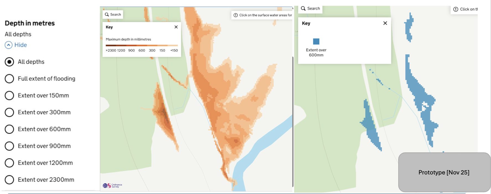
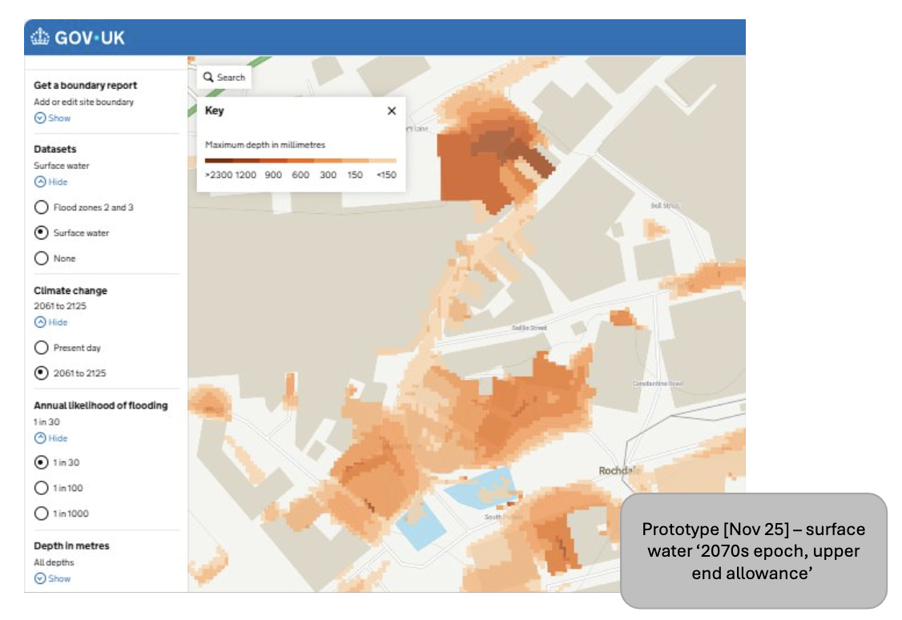
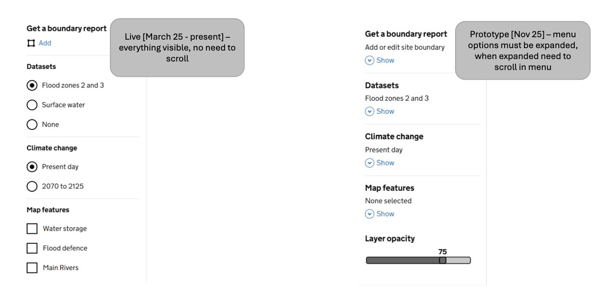
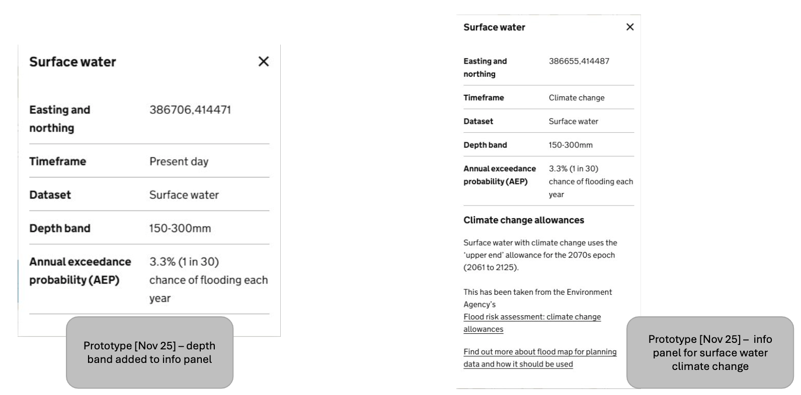
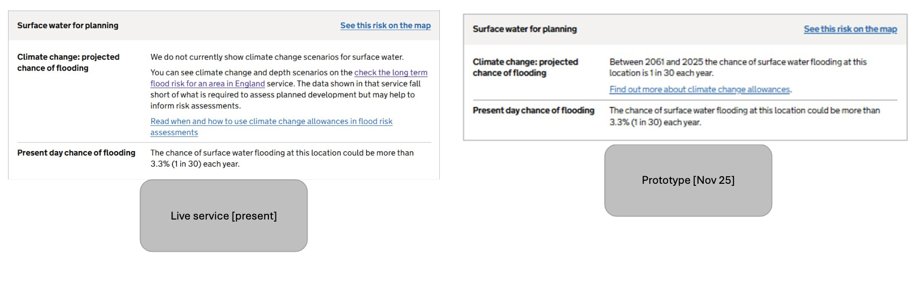
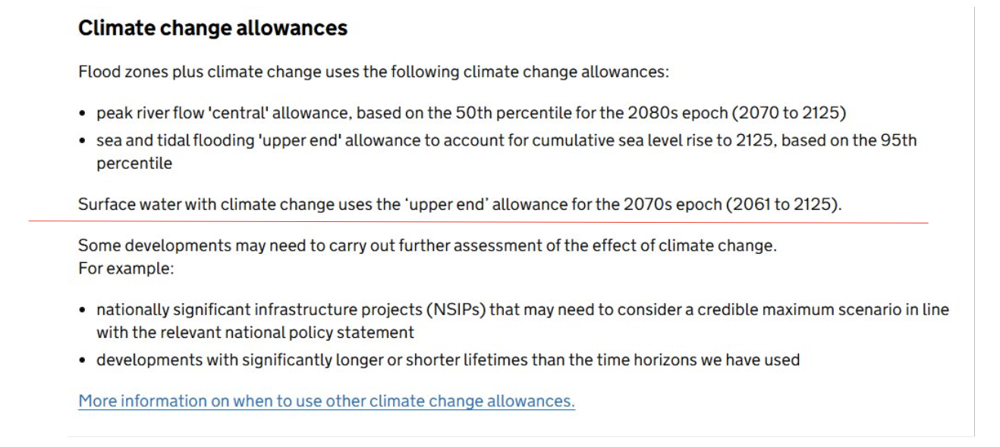
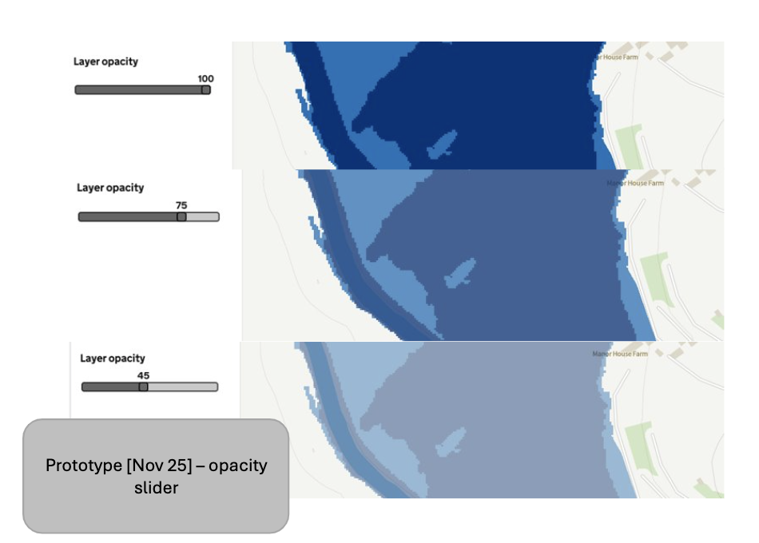
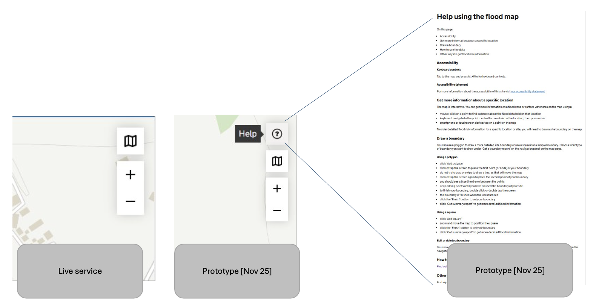

Published
User research round testing surface water depth information, climate change data, opacity slider control, and help page for map navigation.
Depth information is available for present day and climate change surface water data for 1 in 30, 1 in 100, and 1 in 1000 AEPs. You can see all depths together, or toggle through different depth bands.

November 2025 – surface water '2070s epoch, upper end allowance' data now available on the map.

March to November 2025 – everything visible in the menu with no need to scroll. November 2025 – menu options must be expanded, when expanded need to scroll in menu to accommodate additional datasets.

Information panel updated to reflect new datasets with location, risk level, and depth information clearly displayed.

Results page now includes surface water climate change depth information alongside other flood risk data.

'How to use this data' page now contains information about the climate change epoch and allowance for surface water.

To help with being able to see map detail and differentiate between different colours, the user can control the layer opacity. It is set at 75% by default and can be changed from 0 – 100%.

Help button and page added to provide information on how to use the map and interact with its various features.

{% endblock %}